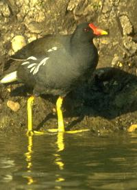
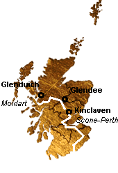

My Bonny Moorhen
Ma jolie poule d'eau
A disguised Jacobite song
Followed by Burns's "Bonie Moorhen"
Tune - Mélodie
"The bonny Moorhen" (pentatonic but for one note!)
from Hogg's "Jacobite Relics" 1st Series N°77, p.129, 1819
Variant
Sequenced by Ch. Souchon
To the tune:
This enigmatic song certainly refers to one or other of the periods of active rebellion, but whether in 1715 or 1745 is doubtful.
Another well-known instance of disguised Jacobite song is
The Blackbird"
. As Hogg remarks, "the allegory is, like the former, perfectly inapplicable, but there can be no doubt who is meant. Had it be a moorcock, the likeness would have been much better".
The tune is an avatar of an air
- first found in the
Henry Atkinson MS tunebook
, 1694, entitled "
Take tent to the rippells good Man
"
- then in James Oswald's "Pocket Companion", vol.xi, N°28 (between 1743 and 1759), entitled "Beware of the ripples"
- and, entitled as "the Taylors' March", in James Aird's "Airs", vol.i, N°173, 1782.
The song "
I rede you, beware of the Ripples
" appears in the collection of bawdy songs found in one of Burns's notebooks after his death and known as
"The merry Muses of Caledonia"
, "ripples" referring to backache. It is directed to be sung to the tune "The taylor faun thro the bed" addressed hereafter. The "sanitized" version below was published in Cromek's "Reliques of Burns", in 1808, under N° 450, and entitled "Hunting Song". It is a paraphrase of "My Bonny Moorhen".
As for the
"Taylors' March"
, it appears in the Scots Musical Museum, in 1790, under N°212, as the tune of "The Taylor fell thro' the Bed" and a note in the "Interleaved Museum" informs us that Burns wrote the 2nd and the 4th stanza thereof. The tune is that of "I rede you", differently arranged.
The more recent tune
"Logie of Buchan"
is practically identical with the precedent melodies.
Source: "Songs of Burns Online Book" (see links)

A propos de la mélodie:
Ce chant énigmatique se rapporte à coup sûr à l'une des deux rébellions, 1715 ou 1745. Mais laquelle? On ne peut le dire avec certitude.
Un autre exemple fameux de chant Jacobite déguisé est le
Merle
. Comme le remarque Hogg, "L'allégorie est, dans les deux cas, parfaitement inopérante, bien que l'allusion ne fasse aucun doute. A parler ici d'un coq de bruyère, on aurait gagné en vraisemblance."
La mélodie est une variante d'un air
- qu'on trouve d'abord dans le
Carnet de chants manuscrits d'Henri Atkinson
, 1694, intitulé
"Attention aux vagues, brave homme"
,
- puis dans le "Vadémécum" de James Oswald, volume XI, N°28 (entre 1743 et 1759), sous le titre "Croyez-moi, méfiez-vous des vagues"
- et, sous le titre "Marche des tailleurs" dans les "Airs" de James Aird, vol. I, N°173, 1782.
Le chant
"Méfiez-vous des vagues"
se trouve dans la collection de chansons paillardes découverte après sa mort dans les carnets de Burns et connue comme
"Les muses joyeuses de Calédonie"
. Les "vagues" se rapportent au mal de reins! Il y est indiqué qu'il se chante du l'air du "tailleur est tombé..." dont il est question plus loin. La version expurgée ci-après parut dans les "Reliques de Burns", de Cromek, en 1808, sous le n° 450 et le titre "Chanson de chasse". Elle imite "La Poule d'eau".
Quant à la
"Marche des Tailleurs"
, elle figure dans le Musée Musical Ecossais en 1790 sous le N° 212, comme musique d'accompagnement de "Le tailleur est tombé du lit" dont une note du "Musée interfolié" nous informe que Burns a écrit la 2ème et la 4ème strophe. C'est la mélodie de "Croyez-moi" arrangée différemment.
La mélodie plus récente
"Logie de Buchan"
est pratiquement identique aux deux précédentes.
Source: "Songs of Burns Online Book" (cf liens)
Sheet Music - Partition

1. My bonny moorhen, my bonny moorhen [1]
Up in the gray hill, down in the glen;
It's when ye gang butt the house, when ye gang ben,
Aye drink a health to my bonny moorhen!
2. My bonny moorhen's gane over the main,
And it will be simmer or she come again;
But when she comes back again, some folk will ken:
Joy be wi' thee, my bonny moorhen!
3. My bonny moorhen has feathers anew,
She's a' fine colours, but nane o' them blue;
She's red, and she's white, and she's green, and she's gray. [2]
My bonny moorhen, come hither away:
4. Come in by Glenduich, and doon by Glendee,
And round by Kinclaven, and hither to me; [3]
For Ronald and Donald are oot on the fen, [4]
To break the wing o' my bonny moorhen.
Source: "The Jacobite Relics of Scotland, being the Songs, Airs and Legends of the Adherents to the House of Stuart" collected by James Hogg, published in Edinburgh by William Blackwood in 1819. Hogg took the present song from
"Willie Dodd'
s preaching".
[1] A code name for Charles Edward Stuart (or his father)
[2] The colours are supposed to allude to those in the tartans of the Clan Stuart (Background of this page)

[3] Hogg remarks that "the route that the poet wishes his moorhen to take is beyond all reason, and must have been sung wrong. If any glen had been taken instead of Glenduich, it might not have been far from the Chevalier's route from his place of landing to Scone. It is visible, however that the song is only a fragment." (See opposite map).
[4] The English soldiers. Concerning these names, a contributor, Mr Paul Ernest, considering that the song refers to the '45, writes:
"Ranald and Donald," which usually are applied to Scots, are applied to the Redcoats in "the Bonnie Moorhen".
There are two possible explanations:
- due to the need to disguise meanings, the writer/singer may have used typically Scottish names as part of the effort to try to fool the British authorities as to the true meaning of the song, or
- "Ranald and Donald" may refer to anti-Jacobite Scottish Highlanders such as the Campbells and the MacLeods, many of whom aided the Redcoats in efforts to capture Prince Charlie after Culloden. (In fairness to the Campbells and MacLeods, I should note that some of them defied their chiefs and helped the Prince escape.)"
1. Une poule d'eau, une poule d'eau [1]
Qui s'en vient volant par monts et par vaux,
En quittant ma ferme ou rentrant au chaud,
Je bois en l'honneur de ma poule d'eau!"
2. Cette poule d'eau qui franchit la mer,
Ne s'en reviendra que passé l'hiver.
Ceux qui le sauront voudront aussitôt,
Boire à la santé de ma poule d'eau.
3. A ma poule d'eau, plumage nouveau:
Jolies couleurs où bleu serait de trop:
Du rouge, du blanc, du vert et du gris! [2]
Que ma poule d'eau vienne jusqu'ici!
4. Partant du Glen Duich, le long du Glen Dee,
Un détour par Kinclaven, et la voici. [3]
Car Ranald et Donald sont dans les roseaux [4]
Pour lui casser les ailes, pauvre poule d'eau!
(Trad. Ch. Souchon (c) 2004)
[1] Un nom de code pour Charles Edouard Stuart (ou son père).
[2] Ces couleurs pourraient se rapporter aux tartans du Clan Stuart (Cf le "papier peint" de cette page)
[3] Hogg note que "l'itinéraire que le chant prescrit à l'oiseau est incompréhensible. Il doit s'agir d'erreurs de chant. S'il n'était pas question du Glen Duich, on aurait pu y voir le chemin suivi par le Prince, depuis l'endoit où il débarqua jusqu'à Scone. Il est toutefois clair, que nous n'avons qu'un fragment du chant." (cf. plan ci-contre)
[4] Les soldats anglais: A propos de ces noms, un correspondant, M. Paul Ernest, qui considère qu'il s'agit d'un chant de 1745, note:
"Ranald et Donald," noms typiquement écossais, désignent les "Habits rouges" dans "Bonnie Moorhen".
Il y a à cela 2 explications possibles:
- afin d'en mieux masquer le sens, l'auteur ou l'interprète du morceau ont eu recours à ces patronymes écossais pour égarer les autorités britanniques quant à la portée réelle du chant, ou bien
- "Ranald et Donald" désignent des clans écossais anti-Jacobites tels que les Campbell et les McLeod, qui prétèrent main forte aux Habits rouges lorsqu'ils traquaient le Prince Charlie après Culloden. (Il faut rendre aux Campbell et aux McLeod cette justice que nombreux furent ceux qui, désobéissant à leurs chefs, aidèrent le Prince à s'échapper)".
"My Bonie Moorhen" or "Hunting Song"
By Robert Burns
from Cromek's "Reliques of Burns", 1808, p.450
Directed to be sung to the tune "I rede you"
Tune - Mélodie
in succession: "I rede you", "Taylors' March", "Logie of Buchan", "The Bonnie Moorhen"
Sequenced by Ch. Souchon
1. The heather was blooming, the meadows were mawn,
Our lads gaed a-hunting ae day at the dawn,
O'er moors and o'er mosses and mony a glen,
At length they discover'd a bonie moor-hen.
Chorus.
- I rede you, beware at the hunting, young men,
I rede you, beware at the hunting, young men;
Take some on the wing, and some as they spring,
But cannily steal on a bonie moor-hen.
2. Sweet-brushing the dew from the brown heather bells
Her colours betray'd her on yon mossy fells;
Her plumage outlustr'd the pride o' the spring
And O! as she wanton'd sae gay on the wing.
I rede you, etc.
3. Auld Phoebus himself, as he peep'd o'er the hill,
In spite at her plumage he tried his skill;
He levell'd his rays where she bask'd on the brae-
His rays were outshone, and but mark'd where she lay.
I rede you, etc.
4. They hunted the valley, they hunted the hill,
The best of our lads wi' the best o' their skill;
But still as the fairest she sat in their sight,
Then, whirr! she was over, a mile at a flight.
I rede you, etc.
1. Par les landes en fleurs et par les prés fauchés,
Au point du jour nos gars s'en allaient pour chasser,
A travers la bruyère et par monts et par vaux,
Jusqu'à ce qu'ils découvrent une poule d'eau.
Chorus.
- Fais bien attention quand tu chasses, mon garçon,
Fais bien attention quand tu chasses, mon garçon;
On tire au vol l'oiseau, le chevreuil lors du saut,
Mais on approche sans bruit de la poule d'eau.
2. Essuyant la rosée de la bruyère brune
Elle était trahie par ses couleurs peu communes;
Son plumage éclipsait tout l'éclat du printemps...
Mue par un caprice, elle s'envola gaiement.
Fais bien attention, etc.
3. Le vieux Phébus, quand il parut à l'horizon,
Voulut sur son plumage, en dardant ses rayons,
Essayer ses talents, comme elle se chauffait-
En masquant ses rayons, elle se trahissait.
Fais bien attention, etc.
4. Ils ont battu longtemps et les vaux et les monts,
Les meilleurs de nos gars, en faisant attention;
Mais alors même qu'elle s'offrait à leur vue,
Au loin elle s'envole et l'on ne la voit plus!
Fais bien attention, etc.
Traduction: Chr Souchon (c) 2004
The "Corries" sing "The Bonny Moorhen"


"The bonny Moorhen" (pentatonic but for one note!)
from Hogg's "Jacobite Relics" 1st Series N°77, p.129, 1819
Variant
Sequenced by Ch. Souchon
|
To the tune:
This enigmatic song certainly refers to one or other of the periods of active rebellion, but whether in 1715 or 1745 is doubtful. Another well-known instance of disguised Jacobite song is The Blackbird" . As Hogg remarks, "the allegory is, like the former, perfectly inapplicable, but there can be no doubt who is meant. Had it be a moorcock, the likeness would have been much better". The tune is an avatar of an air - first found in the Henry Atkinson MS tunebook , 1694, entitled " Take tent to the rippells good Man " - then in James Oswald's "Pocket Companion", vol.xi, N°28 (between 1743 and 1759), entitled "Beware of the ripples" - and, entitled as "the Taylors' March", in James Aird's "Airs", vol.i, N°173, 1782. The song " I rede you, beware of the Ripples " appears in the collection of bawdy songs found in one of Burns's notebooks after his death and known as "The merry Muses of Caledonia" , "ripples" referring to backache. It is directed to be sung to the tune "The taylor faun thro the bed" addressed hereafter. The "sanitized" version below was published in Cromek's "Reliques of Burns", in 1808, under N° 450, and entitled "Hunting Song". It is a paraphrase of "My Bonny Moorhen". As for the "Taylors' March" , it appears in the Scots Musical Museum, in 1790, under N°212, as the tune of "The Taylor fell thro' the Bed" and a note in the "Interleaved Museum" informs us that Burns wrote the 2nd and the 4th stanza thereof. The tune is that of "I rede you", differently arranged. The more recent tune "Logie of Buchan" is practically identical with the precedent melodies. Source: "Songs of Burns Online Book" (see links) |
 |
A propos de la mélodie:
Ce chant énigmatique se rapporte à coup sûr à l'une des deux rébellions, 1715 ou 1745. Mais laquelle? On ne peut le dire avec certitude. Un autre exemple fameux de chant Jacobite déguisé est le Merle . Comme le remarque Hogg, "L'allégorie est, dans les deux cas, parfaitement inopérante, bien que l'allusion ne fasse aucun doute. A parler ici d'un coq de bruyère, on aurait gagné en vraisemblance." La mélodie est une variante d'un air - qu'on trouve d'abord dans le Carnet de chants manuscrits d'Henri Atkinson , 1694, intitulé "Attention aux vagues, brave homme" , - puis dans le "Vadémécum" de James Oswald, volume XI, N°28 (entre 1743 et 1759), sous le titre "Croyez-moi, méfiez-vous des vagues" - et, sous le titre "Marche des tailleurs" dans les "Airs" de James Aird, vol. I, N°173, 1782. Le chant "Méfiez-vous des vagues" se trouve dans la collection de chansons paillardes découverte après sa mort dans les carnets de Burns et connue comme "Les muses joyeuses de Calédonie" . Les "vagues" se rapportent au mal de reins! Il y est indiqué qu'il se chante du l'air du "tailleur est tombé..." dont il est question plus loin. La version expurgée ci-après parut dans les "Reliques de Burns", de Cromek, en 1808, sous le n° 450 et le titre "Chanson de chasse". Elle imite "La Poule d'eau". Quant à la "Marche des Tailleurs" , elle figure dans le Musée Musical Ecossais en 1790 sous le N° 212, comme musique d'accompagnement de "Le tailleur est tombé du lit" dont une note du "Musée interfolié" nous informe que Burns a écrit la 2ème et la 4ème strophe. C'est la mélodie de "Croyez-moi" arrangée différemment. La mélodie plus récente "Logie de Buchan" est pratiquement identique aux deux précédentes. Source: "Songs of Burns Online Book" (cf liens) |
Sheet Music - Partition
|
1. My bonny moorhen, my bonny moorhen [1]
Up in the gray hill, down in the glen; It's when ye gang butt the house, when ye gang ben, Aye drink a health to my bonny moorhen! 2. My bonny moorhen's gane over the main, And it will be simmer or she come again; But when she comes back again, some folk will ken: Joy be wi' thee, my bonny moorhen! 3. My bonny moorhen has feathers anew, She's a' fine colours, but nane o' them blue; She's red, and she's white, and she's green, and she's gray. [2] My bonny moorhen, come hither away: 4. Come in by Glenduich, and doon by Glendee, And round by Kinclaven, and hither to me; [3] For Ronald and Donald are oot on the fen, [4] To break the wing o' my bonny moorhen. Source: "The Jacobite Relics of Scotland, being the Songs, Airs and Legends of the Adherents to the House of Stuart" collected by James Hogg, published in Edinburgh by William Blackwood in 1819. Hogg took the present song from "Willie Dodd' s preaching". [1] A code name for Charles Edward Stuart (or his father) [2] The colours are supposed to allude to those in the tartans of the Clan Stuart (Background of this page)  [3] Hogg remarks that "the route that the poet wishes his moorhen to take is beyond all reason, and must have been sung wrong. If any glen had been taken instead of Glenduich, it might not have been far from the Chevalier's route from his place of landing to Scone. It is visible, however that the song is only a fragment." (See opposite map).[4] The English soldiers. Concerning these names, a contributor, Mr Paul Ernest, considering that the song refers to the '45, writes: "Ranald and Donald," which usually are applied to Scots, are applied to the Redcoats in "the Bonnie Moorhen". There are two possible explanations: - due to the need to disguise meanings, the writer/singer may have used typically Scottish names as part of the effort to try to fool the British authorities as to the true meaning of the song, or - "Ranald and Donald" may refer to anti-Jacobite Scottish Highlanders such as the Campbells and the MacLeods, many of whom aided the Redcoats in efforts to capture Prince Charlie after Culloden. (In fairness to the Campbells and MacLeods, I should note that some of them defied their chiefs and helped the Prince escape.)" |
1. Une poule d'eau, une poule d'eau [1]
Qui s'en vient volant par monts et par vaux, En quittant ma ferme ou rentrant au chaud, Je bois en l'honneur de ma poule d'eau!" 2. Cette poule d'eau qui franchit la mer, Ne s'en reviendra que passé l'hiver. Ceux qui le sauront voudront aussitôt, Boire à la santé de ma poule d'eau. 3. A ma poule d'eau, plumage nouveau: Jolies couleurs où bleu serait de trop: Du rouge, du blanc, du vert et du gris! [2] Que ma poule d'eau vienne jusqu'ici! 4. Partant du Glen Duich, le long du Glen Dee, Un détour par Kinclaven, et la voici. [3] Car Ranald et Donald sont dans les roseaux [4] Pour lui casser les ailes, pauvre poule d'eau! (Trad. Ch. Souchon (c) 2004) [1] Un nom de code pour Charles Edouard Stuart (ou son père). [2] Ces couleurs pourraient se rapporter aux tartans du Clan Stuart (Cf le "papier peint" de cette page) [3] Hogg note que "l'itinéraire que le chant prescrit à l'oiseau est incompréhensible. Il doit s'agir d'erreurs de chant. S'il n'était pas question du Glen Duich, on aurait pu y voir le chemin suivi par le Prince, depuis l'endoit où il débarqua jusqu'à Scone. Il est toutefois clair, que nous n'avons qu'un fragment du chant." (cf. plan ci-contre) [4] Les soldats anglais: A propos de ces noms, un correspondant, M. Paul Ernest, qui considère qu'il s'agit d'un chant de 1745, note: "Ranald et Donald," noms typiquement écossais, désignent les "Habits rouges" dans "Bonnie Moorhen". Il y a à cela 2 explications possibles: - afin d'en mieux masquer le sens, l'auteur ou l'interprète du morceau ont eu recours à ces patronymes écossais pour égarer les autorités britanniques quant à la portée réelle du chant, ou bien - "Ranald et Donald" désignent des clans écossais anti-Jacobites tels que les Campbell et les McLeod, qui prétèrent main forte aux Habits rouges lorsqu'ils traquaient le Prince Charlie après Culloden. (Il faut rendre aux Campbell et aux McLeod cette justice que nombreux furent ceux qui, désobéissant à leurs chefs, aidèrent le Prince à s'échapper)". |
"My Bonie Moorhen" or "Hunting Song"
By Robert Burns
from Cromek's "Reliques of Burns", 1808, p.450Directed to be sung to the tune "I rede you"
Tune - Mélodie
in succession: "I rede you", "Taylors' March", "Logie of Buchan", "The Bonnie Moorhen"
Sequenced by Ch. Souchon
|
1. The heather was blooming, the meadows were mawn,
Our lads gaed a-hunting ae day at the dawn, O'er moors and o'er mosses and mony a glen, At length they discover'd a bonie moor-hen. Chorus. - I rede you, beware at the hunting, young men, I rede you, beware at the hunting, young men; Take some on the wing, and some as they spring, But cannily steal on a bonie moor-hen. 2. Sweet-brushing the dew from the brown heather bells Her colours betray'd her on yon mossy fells; Her plumage outlustr'd the pride o' the spring And O! as she wanton'd sae gay on the wing. I rede you, etc. 3. Auld Phoebus himself, as he peep'd o'er the hill, In spite at her plumage he tried his skill; He levell'd his rays where she bask'd on the brae- His rays were outshone, and but mark'd where she lay. I rede you, etc. 4. They hunted the valley, they hunted the hill, The best of our lads wi' the best o' their skill; But still as the fairest she sat in their sight, Then, whirr! she was over, a mile at a flight. I rede you, etc. |
1. Par les landes en fleurs et par les prés fauchés,
Au point du jour nos gars s'en allaient pour chasser, A travers la bruyère et par monts et par vaux, Jusqu'à ce qu'ils découvrent une poule d'eau. Chorus. - Fais bien attention quand tu chasses, mon garçon, Fais bien attention quand tu chasses, mon garçon; On tire au vol l'oiseau, le chevreuil lors du saut, Mais on approche sans bruit de la poule d'eau. 2. Essuyant la rosée de la bruyère brune Elle était trahie par ses couleurs peu communes; Son plumage éclipsait tout l'éclat du printemps... Mue par un caprice, elle s'envola gaiement. Fais bien attention, etc. 3. Le vieux Phébus, quand il parut à l'horizon, Voulut sur son plumage, en dardant ses rayons, Essayer ses talents, comme elle se chauffait- En masquant ses rayons, elle se trahissait. Fais bien attention, etc. 4. Ils ont battu longtemps et les vaux et les monts, Les meilleurs de nos gars, en faisant attention; Mais alors même qu'elle s'offrait à leur vue, Au loin elle s'envole et l'on ne la voit plus! Fais bien attention, etc. Traduction: Chr Souchon (c) 2004 |
The "Corries" sing "The Bonny Moorhen"